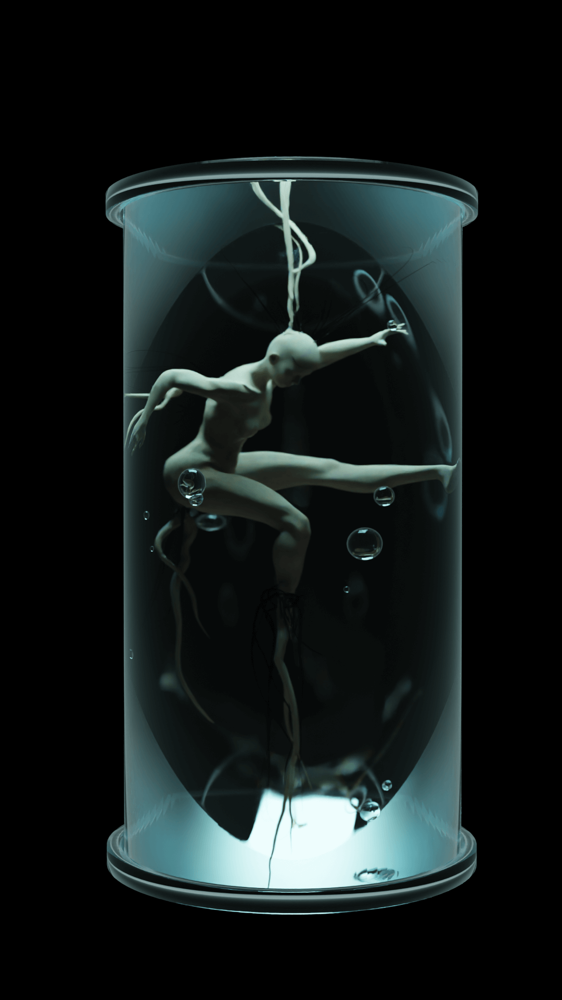
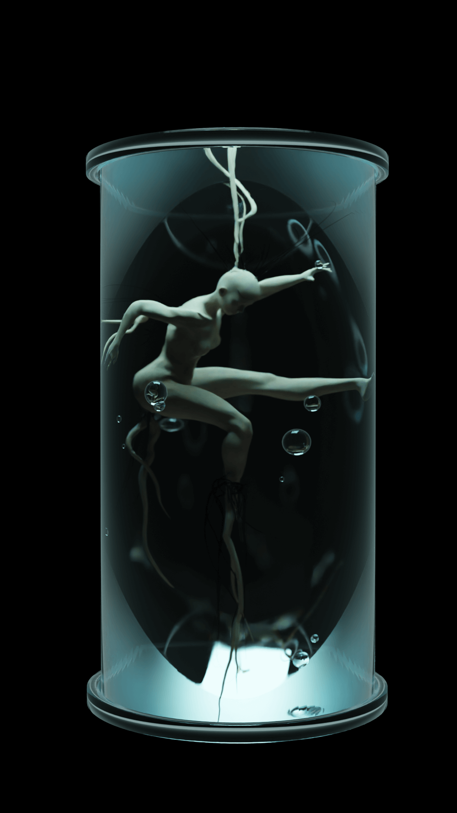
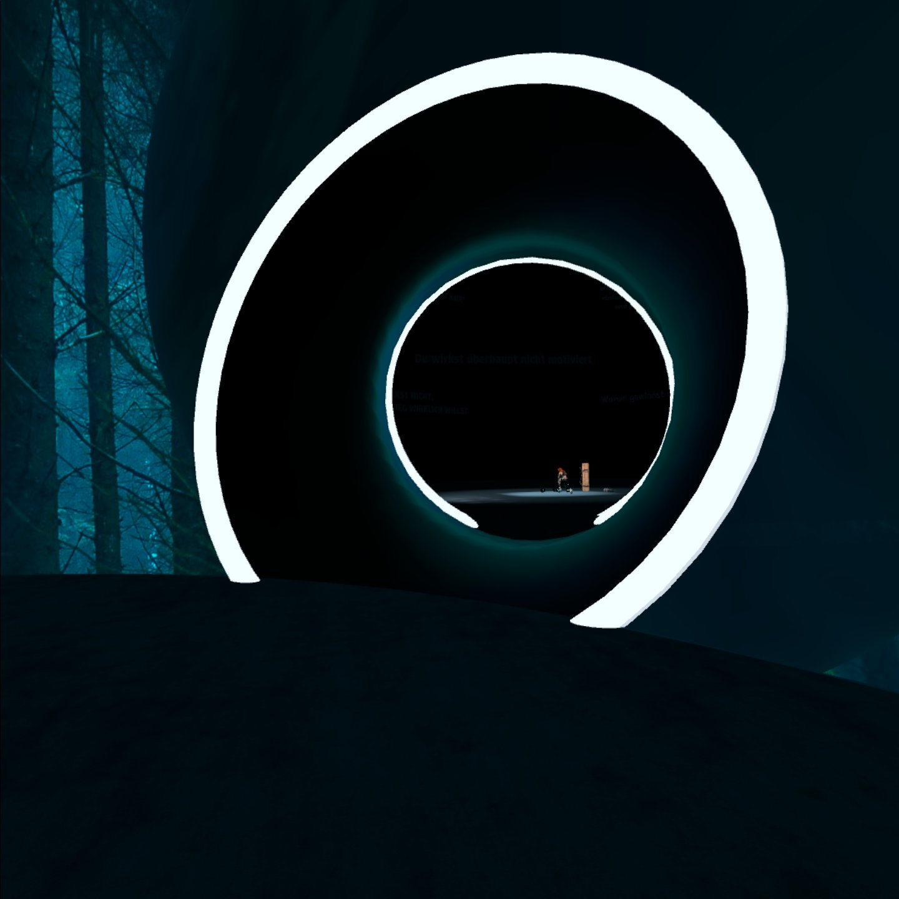
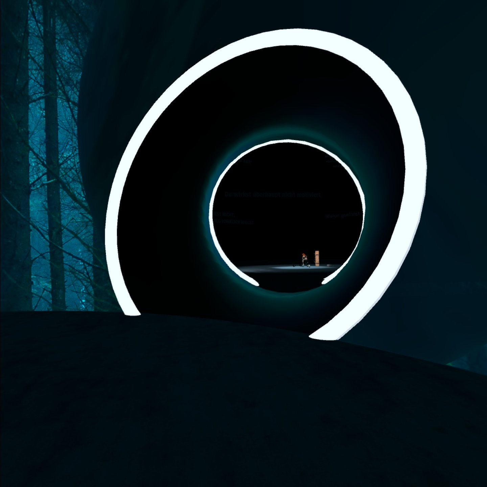

Projektentwicklung
Phase 1
Erste Modelle
Zu Beginn des Projekts habe ich vieles ausprobiert: Erste Modelle in Blender erstellt, Augmented-Reality-Tools getestet und nach einem passenden visuellen Stil für meine Idee gesucht. Mir war früh klar, dass ich nicht fotorealistisch arbeiten wollte – stattdessen sollte die Ästhetik eher an Animationen erinnern, stilisiert und grafisch überhöht.
Ich startete mit einem einzelnen Motiv: einem glänzenden, heroisch inszenierten Sportler – kraftvoll, erfolgreich, beinahe überhöht dargestellt. Die eigentliche Ebene des Projekts offenbart sich aber erst in der virtuellen Ansicht. Betrachtet man das Bild in VR, wird sichtbar, was hinter dieser Fassade steckt: aus dem Hintergrund kommen Hände auf den Sportler zu – vorwurfsvoll, bedrängend, als Symbol für Druck, Erwartungen und Zweifel.


Die ersten Entwürfe nach der groben Planungsphase


Skizzen / Ideen für die folgenden Plakatentwürfe

Phase 2
Neuausrichtung & Reflexion
Zunächst habe ich an meinem ersten Entwurf weitergearbeitet und versucht, mehr Tiefe in die Szene zu bringen. Allerdings kam ich an einem Punkt nicht wirklich weiter – sowohl gestalterisch als auch inhaltlich. Deshalb bin ich nochmal einen Schritt zurückgegangen, habe mein Konzept überdacht und die Rückmeldungen aus der letzten Konsultation durchgearbeitet.
Inhaltlich wollte ich nichts verändern, wohl aber die Art der Visualisierung. Ursprünglich hatte ich mich bewusst für eine stark stilisierte, plastische Darstellung entschieden – mit dem Ziel, keine erkennbare Person abzubilden, sondern eine Projektionsfläche zu schaffen, in die sich Betrachter:innen selbst hineindenken können. Im Prozess habe ich mir aber gedacht, dass diese Optik dem Thema nicht gerecht wird und in der aktuellen Form zu distanziert wirkt. Darum hab ich mich nach einer anderen Darstellungsmöglichkeit umgesehen...
Phase 3
Stilwechsel
Die Plakate sollen wie echte Fotografien wirken – auch wenn nichts daran real ist. Für das neue Motiv habe ich eine Tänzerin gewählt. Das Plakat zeigt sie mitten in einer anmutigen Bewegung – kraftvoll und elegant. In der VR-Variante dagegen erscheint dieselbe Pose in einem ganz anderen Kontext: Die Tänzerin befindet sich in einem gläsernen Tank.
Der Tank steht sinnbildlich für Hilflosigkeit, aber auch für das Gefühl, nur für eine bestimmte Rolle erschaffen worden zu sein – in diesem Fall: zum Tanzen. Die Inszenierung ist bewusst überzeichnet und dramatisch, um diesen inneren Konflikt sichtbar zu machen.
 

 
